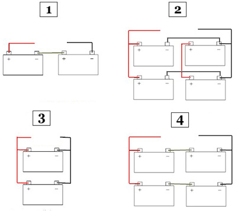
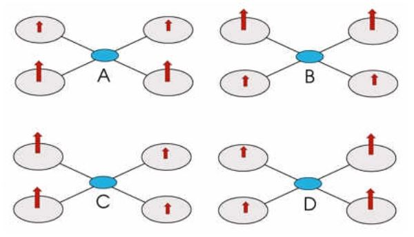

FTS / Geocaging / Geovigilance
FTS
- L'acronyme FTS signifie en français :
Système d'interruption du vol. FTS : Flight Termination System. - Concernant le FTS, son but est de :
Diminuer l'angle d'impact au sol et d'arrêter le fonctionnement de l'UAS. - Le système d'interruption du vol (FTS) d'un drone de classe C5 :
Doit être indépendant du contrôleur de vol. - L'objectif d'un système d'interruption du vol (FTS) est :
D'empêcher le drone de sortir de la zone tampon. - Pour un UAS de classe C6, le système d'interruption du vol (FTS) :
Doit être indépendant du contrôleur de vol et de la fonction de geocaging. - Dans le cas de l'activation d'un système d'interruption du vol (FTS), un drone de classe C5 :
Doit disposer d'un dispositif réduisant la force de l'impact (parachute,etc...). - Le manuel d'utilisation doit fournir une estimation de la distance parcourue par l'aéronef en cas d'activation du système d'interruption du vol (FTS) pour les drones de classe :
C6 - Un système d'interruption du vol (FTS) doit permettre :
De forcer la descente de l'aéronef et d'empêcher son déplacement horizontal motorisé.
- Le geocaging consiste pour le télépilote :
à établir un volume dans lequel l'UAS doit évoluer. - En vol, à l'approche de la barrière geocaging, l'UAS :
Transmet une alerte au télépilote. - Pour fonctionner, en plus des paramètres du volume de la cage, la fonction geocaging d'un UAS utilise des paramètres supplémentaires tels que :
La vitesse et l'accélération du drone pour calculer une trajectoire balistique. - Pour un drone de classe C6, la description du système de geocaging et du système d'interruption du vol (FTS) doit être incluse dans :
Le manuel d'utilisation. - La fonction geocaging utilise généralement pour un fonctionnement optimal :
Un positionnement GPS. - Le geocaging fonctionne sur le principe de barrières virtuelles :
En altitude/hauteur et en éloignement. - En cas de perte de la liaison de commande de vol de l'UAS, si celui-ci dépasse une des limites de la zone tampon :
La fonction geocaging entraine la coupure de l'alimentation électrique qui déclenche le dispositif de réduction d'impact au sol.
- La fonction de géovigilance d'un drone, lorsqu'il en est équipé, dispose d'une interface :
Permettant de charger et de mettre à jour des données sur les limitations de l'espace aérien.
Batteries
- Pour stocker sur une longue période une batterie LiPo, il est recommandé
De la charger à 50% environ. - 35C indiqué sur une batterie destinée à un drone indique
La capacité de décharge de la batterie. - Vous avez une batterie marquée 5C 1500 mAh, quelle est sa capacité de charge maximale ?
7,5 A. - Le courant de charge d'une batterie est donné :
En Ampère (A). - Il est possible de brancher des batteries :
En parallèle et/ou en série. - D'après l'image ci-dessous, les batteries branchées en série sont représentées par le dessin numéro :
1 - D'après l'image ci-dessous, les batteries branchées en série sont représentées par le dessin numéro :
3

Capteurs
IMU
- L'IMU (unité de mesure inertielle) se trouve :
Dans l'UAS. - Le sigle «IMU» signifie en français :
Unité de mesure inertielle. - Dans une centrale inertielle (IMU), les accélérations sont mesurées dans un repère orienté selon:
Les axes de l'aéronef (longitudinal, latéral, normal).
- Un système de positionnement visuel (VPS) fonctionne avec :
Un système de capteurs optiques (caméras) et des capteurs ultrasons. - Le système de positionnement visuel (VPS) maintien la hauteur de votre UAS grâce a :
Des ondes radios. Les capteurs ultrasons fonctionnent avec des ondes radio
- L'unité de mesure de la pression de l'air dans le système international est...
Le Pascal (Pa). 1 Pa = 1 N/m² - Le baromètre mesure :
une pression - L'altitude d'un aéronef sans équipage à bord est donnée par les instruments suivants : 1 - baromètre ; 2 - positionnement satellite ; 3 - capteur ultrason ; 4 - capteur infrarouge ; La combinaison de proposition exacte est :
1, 2 - Parmi les instruments de contrôle embarqués sur un aéronef sans équipage à bord, celui qui est constitué d'une capsule anéroïde est l'indicateur de :
L'altitude barométrique. - Au sol, un altimètre calé sur la pression locale indique :
Une hauteur égale à 0 ft.
- Un UAS de classe C5 et/ou C6 doit satisfaire aux exigences techniques relatives :
à la fonction de géovigilance de classe C3. - La résultante d'un courant électrique qui passe au travers d'un conducteur entraîne :
Un effet de chauffe. - Le service de communication assurant la commande et le contrôle entre l'aéronef sans équipage à bord et l'unité de commande (CU) se nomme :
Le service de liaison C2. - La différence entre la vitesse indiquée et la vitesse 'air' réelle est :
Fonction des erreurs instrumentales et de la densité de l'air.
Vol et aérodynamique
- A l'aide de cette image, indiquez quel aéronef multi-rotor sans équipage à bord va se mettre en roulis ou s'incliner à droite
C - A l'aide de cette image, indiquez quel aéronef multi-rotor sans équipage à bord va se rapprocher de vous
B

- L'attitude de vol d'un aéronef sans équipage à bord de type multi rotor est contrôlée :
Par les moteurs qui modifient leur vitesse de rotation en fonction de la direction souhaitée du vol. - Pour faire avancer un aéronef sans équipage à bord de type 'hélicoptère' :
Il faut incliner le rotor principal vers l'avant. - A mesure qu'un aéronef multi-rotor ou de type 'hélicoptère' accélère, son attitude devient...
à piquer.
- La distance verticale entre votre drone et la surface au sol correspond à :
La hauteur. - La vitesse vraie (vitesse réelle) est la vitesse de l'aéronef :
Par rapport à la masse d'air. - La force s'opposant au déplacement d'un aéronef en vol est appelée...
La traînée. - Un vent d'une vitesse de 15 nœuds équivaut à :
7 m/s.
- La limite de vitesse horizontale d'un drone de classe C6 est de :
180 km/h (50 m/s). - La vitesse maximale d'un UAS de classe C5 :
N'est pas définie dans la réglementation. - Pour un UAS de classe C5, la sélection d'une faible vitesse doit limiter la vitesse au sol à :
5 m/s au maximum.